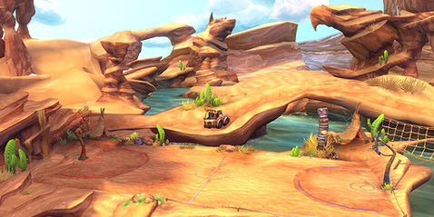
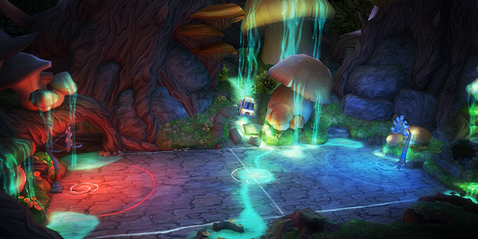
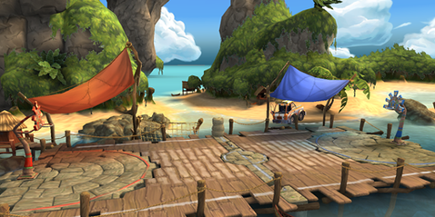
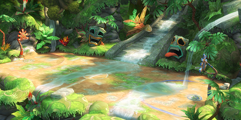
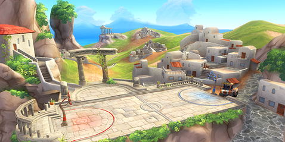
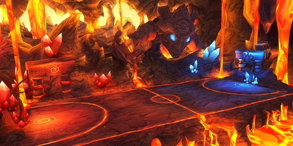

10 |
Las canchas |
 |
Totem Rock
Totem Rock es un lugar sagrado para los nativos americanos del suroeste de Estados Unidos. Eagle Rock y Wolf Hill se yerguen haciendo guardia sobre uno de los primeros enclaves de HoopWorld, reconstruido ahora por el equipo del oeste norteamericano en honor a los Antiguos. Full Moon Fever
Full Moon Fever es un misterioso claro en lo más profundo de la Selva Negra. La magia de este lugar vibra con tal fuerza que ha producido mutaciones en la vegetación, que crece hasta alcanzar inmensas proporciones, dando al lugar fantasmales colores y brillos. Pier Pressure
Pier Pressure es un embarcadero olvidado en una hermosísima isla remota del Pacífico. La descubrió el equipo Samba Sunrise, que sintió el misterioso impulso de reconstruirlo en forma de cancha de basket. Su felicidad fluye hacia las suaves corrientes marinas. Jungle Jam
En lo más profundo de la selva virgen de América del Sur se levanta un misterioso templo olvidado desde antaño, edificado sobre una tremenda fuente de poder mágico. La energía de este lugar dio lugar a las civilizaciones perdidas de esta región, dotándolas de gran sabiduría y valor. Olympus O.D.
Olympus O.D. es uno de los más antiguos y sagrados lugares de HoopWorld, aislado sobre un acantilado de acceso imposible que domina un pacífico pueblo griego bañado por aguas claras. Lo protegen por siempre los Kalans, los insomnes vigilantes de los Antiguos. Magma Rumble
En las hirvientes profundidades de un volcán activo se levantan las ruinas de una prisión mágica, que supuestamente encierra para siempre a los Shadowskulls gracias a un poderoso artefacto mágico. Pero alguien ha robado el sello del artefacto, liberando al mal en el mundo. |
 |
 |
 |